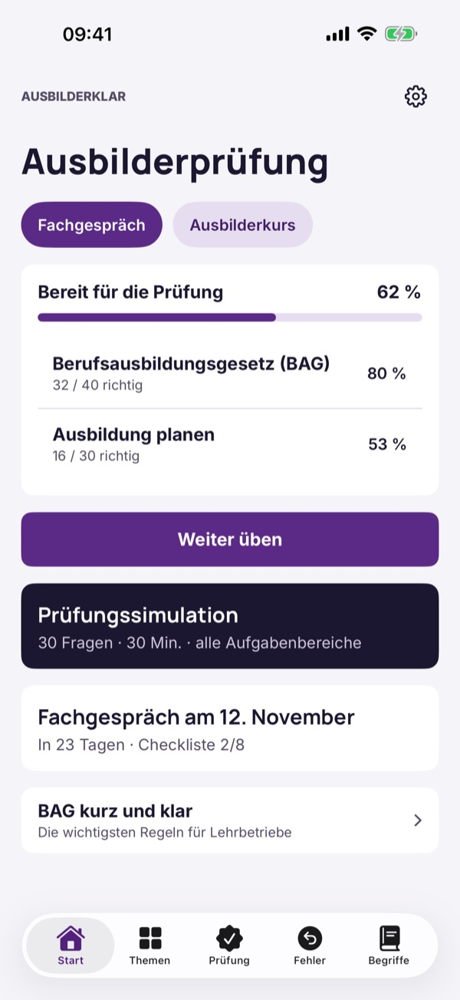
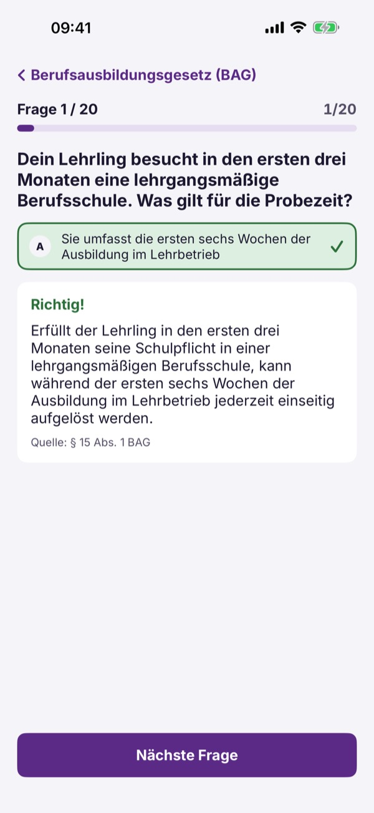
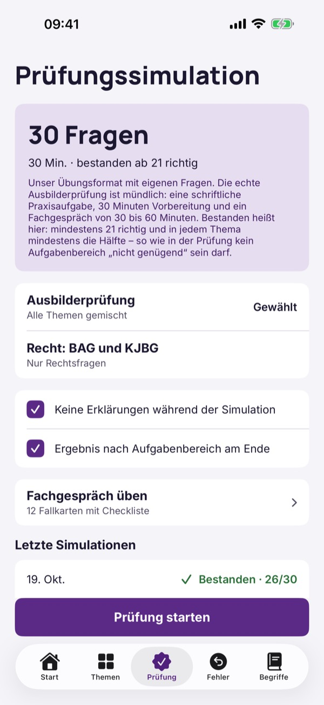

Ausbilderprüfung Österreich



Ausbilderklar hilft dir, dich auf die Ausbilderprüfung in Österreich vorzubereiten – mit österreichischem Recht, nicht mit deutschen AEVO-Regeln.
20 Fragen, die Begriffe und die Checkliste kannst du ohne Kauf nutzen. Die Vollversion ist ein Einmalkauf und schaltet alle Fragen, Simulationen und die Statistik frei. Kein Abo.
Ausbilderklar ist unabhängig und nicht mit der Wirtschaftskammer, dem WIFI oder einer Behörde verbunden. Die Ausbilderprüfung legst du vor einer Prüfungskommission der Meisterprüfungsstelle ab.
Terms of Use (EULA): https://www.apple.com/legal/internet-services/itunes/dev/stdeula/
Privacy: https://baytechbv.github.io/privacy/ausbilderpruefung-at/